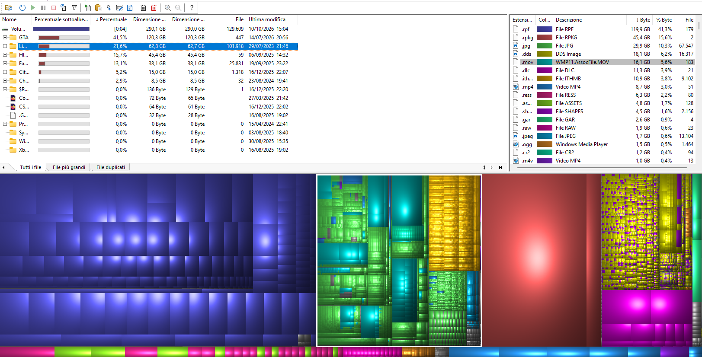

La tecnologia non è per tutti, o meglio, non è automatico saper fare le cose, a differenza di quanto molti credano. E non parlo di abilità da hacker come nei film, bensì di una delle azioni più semplici e quotidiane che svolgiamo sui nostri dispositivi: la ricerca di contenuti.
Ricerche sul proprio computer, ma soprattutto su internet. E in entrambi i casi una certa abilità e la conoscenza di alcuni trucchi può fare la differenza, nel trovare in meno tempo ciò che si sta cercando o addirittura direttamente nel non rimanere con in mano un pugno di mosche. Mi rendo conto che il mondo è popolato in gran parte da persone che ormai sono convinte che il confine della conoscenza non va molto oltre la propria home di Facebook, ma per chi volesse utilizzare davvero gli strumenti a disposizione la lista di cose da sapere è talmente lunga che ci si potrebbe fare un corso di laurea specifico.
Qui mi limiterò a riassumerne tra le più banali (ma certamente molto potenti ed utili), cercando soprattutto di far emergere il concetto che anche in cose come le ricerche si può nascondere un profondo livello di competenza, raggiungibile solo in anni ed anni di esperienza “sul campo”. Quindi mi raccomando, mai sottovalutare nulla!
Tra i trucchi più famosi nelle ricerche abbiamo l’uso dell’asterisco, principalmente con due funzioni: serve a “tenere il posto” per una parola che non ricordiamo all’interno di una frase da cercare su internet (Es: “Nel mezzo del * di nostra vita”) o per filtrare in un elenco sul proprio computer solo i file con una determinata estensione (Es: “*.Doc” per visualizzare tutti i documenti di testo). Per le ricerche su Google è altrettanto utile l’uso del segno meno per escludere una certa categoria in casi di omonimia tra i risultati (Es: “Washington -città” se voglio avere notizie del presidente).
Nelle cartelle del proprio computer è anche possibile cercare i file in base alla dimensione degli stessi: basta digitare nella barra di ricerca qualcosa tipo "size:<100MB" o "dimensione:grande" (ovviamente le combinazioni sono molteplici, anche a seconda del sistema operativo), per filtrare tutti i documenti presenti in una cartella che superano una certa soglia. Esistono anche dei programmi gratuiti che consentono la visualizzazione grafica della suddivisione dei vari dischi del proprio computer per notare a colpo d'occhio cosa occupa più spazio. Ammetto che a prima vista l'immagine che segue può sembrare una cacofonia di colori messi lì un po' a caso, ma fidatevi che lo strumento è più semplice ed utile di quel che sembra.

Anche su Google gli strumenti aggiuntivi non mancano: proprio sotto alla barra di ricerca, all'interno di una qualsiasi schermata con i risultati, ci sono le varie schede "Immagini", "Video", "Notizie", eccetera. Ecco, l'ultima di queste si chiama proprio "strumenti" e consente di filtrare la lingua dei risultati cercati, la data dei vari contenuti (per esempio se stiamo cercando informazioni su qualcosa accaduto 10 anni fa e vogliamo solo leggere ciò che è stato scritto a suo tempo, al posto delle migliaia di articoli più recenti, magari scritti proprio in occasione del decennale di tale evento). È anche possibile cercare qualcosa specificando le esatte parole, selezionando lo strumento della "ricerca avanzata", oppure scrivendo qualcosa tra virgolette nella barra. Vi stupirà vedere quanto diversi saranno i risultati cercando le frasi in questo al posto di scriverle normalmente!
Infine, un trucco banale ma che fa sempre effetto, la ricerca per immagine: non solo è possibile scrivere qualcosa e vederne i risultati nella sezione immagini di Google, ma si può anche fare il contrario, ovvero caricare una foto e farsi dire cos’è, in che altri siti appare quella figura, se è protetta da copyright e trovarne copie con una maggiore risoluzione.
Non è certo una cosa immediata, ma appunto con un po’ di esperienza si riesce a fare veramente di tutto. E nel caso in cui ci si trovi di fronte ad un ostacolo, il bello è che la soluzione probabilmente da qualche parte esiste: basta cercarla.